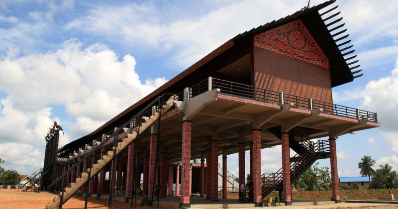
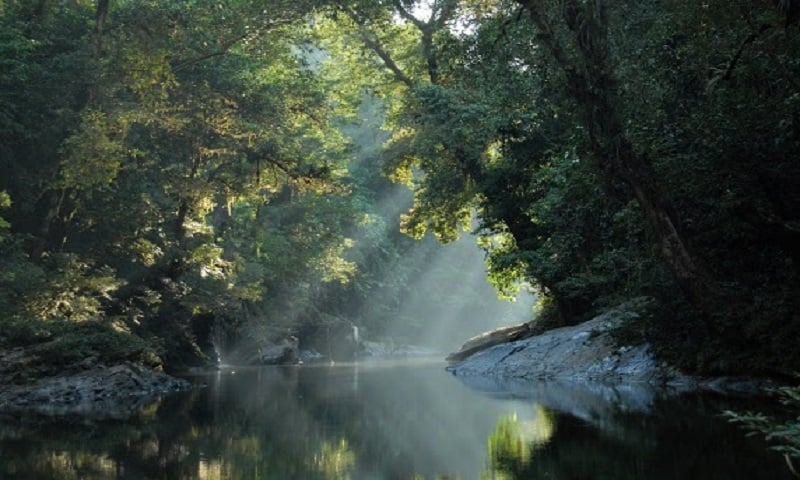
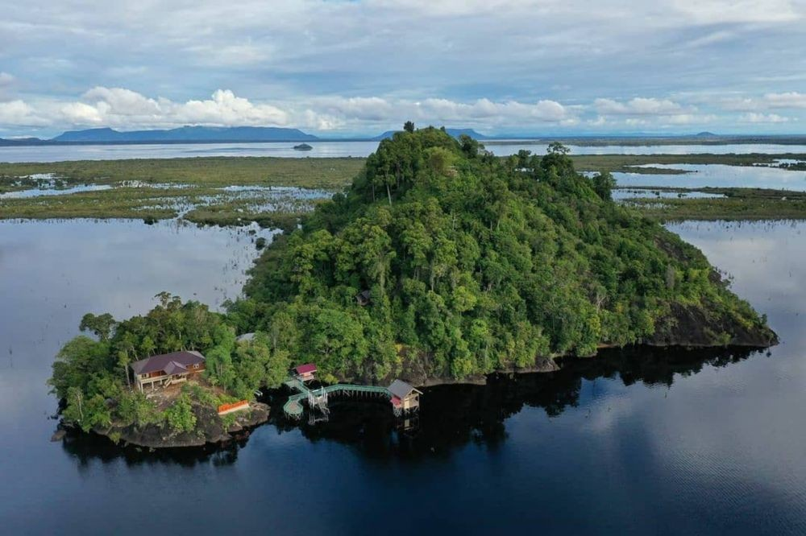
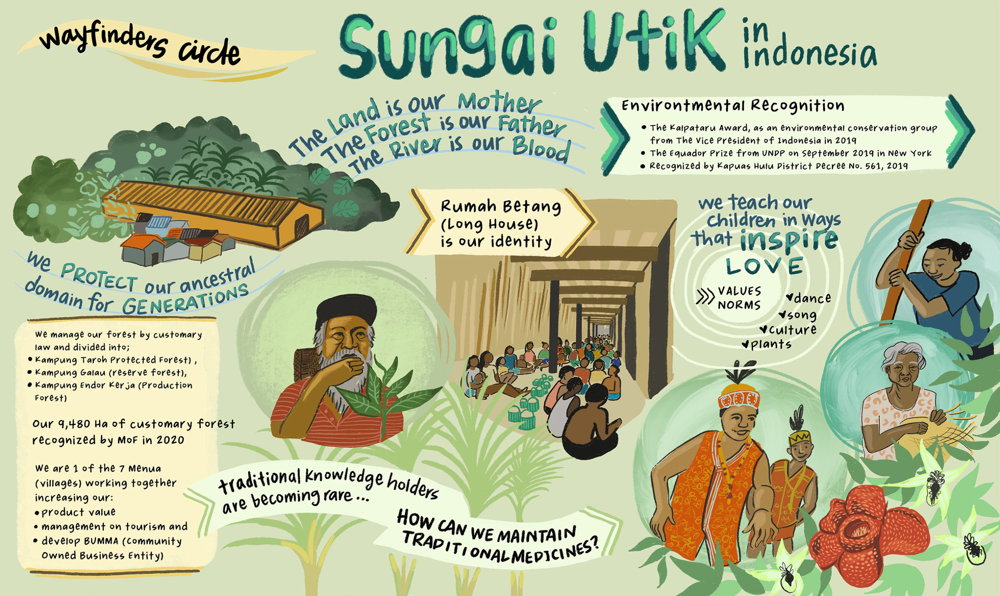

Sejarah
Menurut catatan sejarah, wilayah Kapuas Hulu telah dihuni oleh suku Dayak sejak abad ke-7.
Suku Dayak merupakan suku asli Kalimantan dan merupakan suku mayoritas di Kabupaten Kapuas Hulu.
Suku Dayak memiliki berbagai sub-suku, termasuk Dayak Kayan, Dayak Iban, Dayak Kanayatn, dan Dayak Taman.
Suku Melayu mulai memasuki wilayah Kapuas Hulu pada abad ke-13. Suku Melayu merupakan suku pendatang dari Sumatera
dan telah berbaur dengan suku Dayak. Suku Melayu memiliki peranan penting dalam perkembangan wilayah Kapuas Hulu,
terutama dalam bidang perdagangan dan pemerintahan. Suku Tionghoa mulai memasuki wilayah Kapuas Hulu pada
abad ke-18. Suku Tionghoa merupakan suku pendatang dari Tiongkok dan telah berperan dalam bidang perdagangan
dan ekonomi. Suku Jawa mulai memasuki wilayah Kapuas Hulu pada abad ke-19.
Suku Jawa merupakan suku pendatang dari Jawa dan telah berperan dalam bidang pertanian dan perkebunan.
Pada masa penjajahan Belanda, wilayah Kapuas Hulu berada di bawah kekuasaan Hindia Belanda.
Wilayah Kapuas Hulu dibagi menjadi beberapa distrik, yaitu Distrik Putussibau, Distrik Putussibau Utara,
Distrik Putussibau Selatan, Distrik Nanga Pinoh, Distrik Batang Lupar, dan Distrik Sekadau. Pada masa penjajahan
Jepang, wilayah Kapuas Hulu berada di bawah kekuasaan Kekaisaran Jepang. Wilayah Kapuas Hulu dibagi menjadi
beberapa gun, yaitu Gun Putussibau, Gun Nanga Pinoh, Gun Batang Lupar, dan Gun Sekadau.
Setelah proklamasi kemerdekaan Republik Indonesia, wilayah Kapuas Hulu menjadi bagian dari Negara Kesatuan
Republik Indonesia. Pada tanggal 13 Januari 1953, berdasarkan Undang-Undang Darurat Nomor 3 Tahun 1953 tentang
Pembentukan Daerah Tingkat II di Kalimantan, dibentuklah Kabupaten Kapuas Hulu dengan ibu kota Putussibau.
Kabupaten Kapuas Hulu mengalami berbagai perkembangan selama beberapa dekade terakhir. Kabupaten ini telah
menjadi salah satu kabupaten penting di Provinsi Kalimantan Barat, terutama dalam bidang pertanian, perkebunan,
dan pariwisata.

Geografis
Kabupaten Kapuas Hulu merupakan salah satu kabupaten di Provinsi Kalimantan Barat, Indonesia.
Kabupaten ini terletak di bagian timur laut Provinsi Kalimantan Barat, berbatasan dengan Malaysia di sebelah utara,
Kabupaten Sanggau dan Kabupaten Sintang di sebelah selatan, Kabupaten Melawi di sebelah barat, serta Provinsi Sarawak,
Malaysia di sebelah timur. Kabupaten Kapuas Hulu memiliki luas wilayah sebesar 29.842 km², dan merupakan
kabupaten terluas kedua di Kalimantan Barat setelah Kabupaten Sintang. Topografi Kabupaten Kapuas Hulu bervariasi,
mulai dari dataran rendah di sepanjang Sungai Kapuas hingga pegunungan di bagian timur. Kabupaten ini juga
memiliki banyak sungai dan danau, termasuk Sungai Kapuas, Sungai Melawi, dan Danau Sentarum. Iklim Kabupaten
Kapuas Hulu tropis, dengan suhu rata-rata berkisar antara 24°C hingga 28°C. Kabupaten ini memiliki dua musim,
yaitu musim kemarau dan musim hujan. Musim kemarau berlangsung dari bulan April hingga Oktober, sedangkan musim
hujan berlangsung dari bulan November hingga Maret.
Berikut adalah beberapa fitur geografis Kabupaten Kapuas Hulu:
1. Sungai Kapuas: Sungai terpanjang di Indonesia dan Asia Tenggara.
2. Danau Sentarum: Danau terluas di Kalimantan Barat.
3. Taman Nasional Betung Kerihun: Taman nasional terbesar di Kalimantan Barat.
4. Pegunungan Kapuas Hulu: Pegunungan yang membentang di sepanjang perbatasan Indonesia-Malaysia.
Kabupaten Kapuas Hulu memiliki potensi wisata yang besar, terutama wisata alam. Beberapa objek wisata alam yang terkenal di kabupaten ini antara lain Danau Sentarum, Taman Nasional Betung Kerihun, dan Gunung Kelam.

Wisata
Kabupaten Kapuas Hulu merupakan salah satu kabupaten di Provinsi Kalimantan Barat, Indonesia.
Kabupaten ini memiliki potensi wisata yang besar, terutama wisata alam.
Beberapa objek wisata alam yang terkenal di kabupaten ini antara lain:
Danau Sentarum

Danau Sentarum merupakan danau terluas di Kalimantan Barat dan salah satu danau terbesar di Indonesia.
Danau ini memiliki luas sekitar 225.000 hektar dan terletak di Kecamatan Batang Lupar, Kabupaten Kapuas Hulu.
Danau Sentarum merupakan habitat bagi berbagai jenis flora dan fauna, termasuk burung air, ikan, dan mamalia.
Taman Nasional Betung Kerihun

Taman Nasional Betung Kerihun merupakan taman nasional terbesar di Kalimantan Barat.
Taman nasional ini memiliki luas sekitar 13.420 hektar dan terletak di Kecamatan Betung Kerihun,
Kabupaten Kapuas Hulu. Taman Nasional Betung Kerihun merupakan habitat bagi berbagai jenis flora dan fauna,
termasuk hutan hujan tropis, sungai, dan danau.
Sungai Utik

Wisata Sungai Utik merupakan salah satu destinasi wisata yang populer di Kabupaten Kapuas Hulu, Kalimantan Barat.
Destinasi wisata ini menawarkan keindahan alam dan budaya dari Suku Dayak Iban. Wisata Sungai Utik terletak di Desa
Batu Lintang, Kecamatan Embaloh Hulu, Kabupaten Kapuas Hulu. Desa ini berjarak sekitar 100 kilometer dari ibu kota
kabupaten, Putussibau. Objek wisata utama di Wisata Sungai Utik adalah Rumah Betang Sungai Utik.
Rumah betang ini merupakan rumah adat Suku Dayak Iban yang memiliki panjang sekitar 200 meter.
Rumah betang ini dihuni oleh sekitar 200 kepala keluarga.